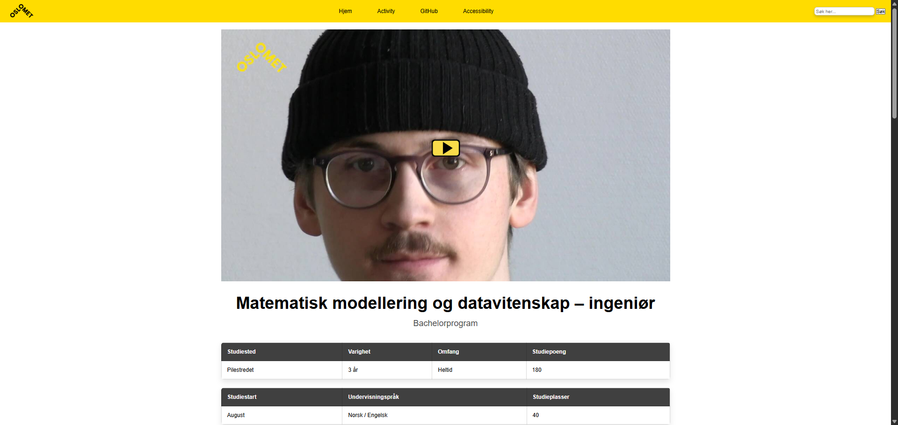

Skoleprosjekt
Rekonstruksjon av OsloMet sin emneside
Koding i HTML, CSS og JavaScript fra scratch.
Koding i HTML, CSS og JavaScript fra scratch.
Effektiviserte manuelle prossesser gjennom automatisjon ved hjelp av MS PA, JavaScript og UI automatisering.
Markedsmateriell for KIWI Pluss og Trumf, utarbeidet i Photoshop.
Forsknings- og analyseprosjekt for NorgesGruppen.